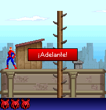

Inspecting Sony Pictures v6.2.20 corrected our earlier label: this was the Spanish Java ME game. We needed to follow its original Canvas inputs, separately from the other Spider-Man’s BREW controls.DO01
The logo wait.
The original timer loop spun while waiting for the logo deadline. A blocking compatibility-clock boundary kept that wait without occupying the host thread continuously. The selected comparison measured 99.97 percent of one host core before and 1.60 percent after, with identical logo pixels.DO02DO03

The Spanish original rooftop section,176×182, with its ¡Adelante! prompt, retained from desktop original-game execution.
Open the image for the full original view.
DO90Let the game see 2.
We had to keep ordinary phone directions separate from raw numbers. The game overrode numeric 1, 2 and 3. Turning raw 2 into Up before its Canvas received the input would erase a web or jump action, depending on the scene.DO04
Rooftop, subway and boss input maps therefore kept their actual numbered actions. The early phone report covered rooftop execution; later subway and boss checks entered those original scenes directly. Those probes did not become a normal full-game playthrough.DO04DO05DO07DO08
The executed compatibility classes and generic preparation retained the documented transformations separately from the original JAR. The recovered game kept its own Spanish text, MIDI resources and original progression.DO06DO09
About these records
The platform/edition correction follows the supplied Spanish J2ME original. The CPU comparison concerns a host timer-thread wait, not phone heat or overall gameplay speed. Rooftop phone evidence, direct scene-entry probes and later UI checks retain distinct scopes. The historical rooftop image is original desktop guest output; executed compatibility derivatives are not described as wholly untouched originals.
The receipts
Selected source lines, investigation notes and recorded feedback. Open a receipt for the original context and scope.
DO01 / The exact supplied game is Spanish J2MECheckpoint investigation notes
Source: SpiderMan_DocOck_Bridge_v0.1.2_PRIVATE_CHECKPOINT.zip / SpiderMan_DocOck_Bridge/README_FIRST.txt · selected lines 1–7
SPIDER-MAN VS DOC OCK BRIDGE v0.1.2 — PRIVATE ANDROID BUILD INSTALL Open SpiderMan_DocOck_Bridge_v0.1.2_PRIVATE.apk on the phone and install. The launcher name is Spider-Man: Doc Ock. Android 8.0 or later (API 26). The supplied original game is included; no game import or internet is needed. This particular Sony Pictures v6.2.20 JAR is Spanish.
DO02 / The original clock spins while the logo waitsCheckpoint investigation notes
Source: SpiderMan_DocOck_Bridge_v0.1.2_PRIVATE_CHECKPOINT.zip / SpiderMan_DocOck_Bridge/TECHNICAL_HANDOFF.txt · selected lines 7–30
EXECUTION All original game methods run as Java/Dex against a targeted MIDP layer. Original assets remain byte-identical. No gameplay is reimplemented. D8 keeps bridge/MIDP/UI code in the main DEX. Original classes are separate prepared assets: guest.dex from the unchanged JAR, and clock.dex from d.class. GuestLoader loads clock.dex before guest.dex in one guest class namespace; all original reflection uses Platform.guestClass. Android/MIDP stays in the parent loader. Content-addressed code-cache copies are read-only before loading. Resources are packaged at the APK classpath root, preserving resource lookup. The supplied original JAR is retained unchanged under original/game.jar. One explicit platform API redirect is applied to d.class in a generated JAR: System.currentTimeMillis() becomes bridge.GameClock.currentTimeMillis(), which delegates to the unchanged blocking Platform clock. The constant pool method owner changes; every original instruction, method body and all other constant-pool entries remain intact. tools/prepare_game.py owns this. The original d.run() repeatedly polls time without sleeping, including during 3-second logos. The host clock blocks for 1 ms per poll and gates on foreground state. It returns real wall time and keeps the original per-scene q deadlines (75 ms rooftops, 115 ms subway, 68 ms first boss in the tested states). The separate original gameplay clock calls outside d.class remain unchanged. A host comparison of the actual logo timer found 99.97% of one CPU core for original busy waiting and 1.60% with the blocking host clock; first-logo pixels were identical. This is timer-thread host evidence, not phone thermal evidence.
DO03 / Same logo, less host timer-thread CPUHistorical original-runtime host comparison
Source: SpiderMan_DocOck_Bridge_v0.1.2_PRIVATE_CHECKPOINT.zip / SpiderMan_DocOck_Bridge/evidence/execution-verification.txt · selected lines 1–2
PASS original subway and Doc Ock scene rendering, input and native pause (direct scene-entry probes).
PASS busy-wait CPU comparison and pixel-identical original startup image: [{'runtime': 'original-busy-wait', 'wall_seconds': 1.500155924, 'original_timer_thread_cpu_seconds': 1.499740046, 'one_core_percent': 99.9722776817165}, {'runtime': 'blocking-host-clock', 'wall_seconds': 1.500194667, 'original_timer_thread_cpu_seconds': 0.024006056, 'one_core_percent': 1.6001960630886578}]DO90 / Historical image / Spider-Man: Doc OckHistorical host capture
Source: SpiderMan_DocOck_Bridge/evidence/acceptance/03_rooftops.png
Retained historical host output. Original emulator chrome, where present, is part of the unchanged source image. No phone capture or phone performance is inferred.
Unchanged historical image. Source member: SpiderMan_DocOck_Bridge/evidence/acceptance/03_rooftops.png SHA-256: 908983c8ea3b5deab16466808bed2a5afac64014c68d01afdf181fbf4364b968 The Spanish original rooftop section,176×182, with its ¡Adelante! prompt, retained from desktop original-game execution. Scope: Historical originalMIDlet JVM framebuffer, not phone screenshot. Clean game-only pixels, zeroEXIF.
DO04 / Raw numeric two is not the phone Up keyCheckpoint investigation notes
Source: SpiderMan_DocOck_Bridge_v0.1.2_PRIVATE_CHECKPOINT.zip / SpiderMan_DocOck_Bridge/TECHNICAL_HANDOFF.txt · selected lines 55–66
INPUT Native phone directions: -1 up, -2 down, -3 left, -4 right; -5 = FIRE / OK. Native getGameAction transforms are respected, including the game's explicit raw overrides for numeric 1, 2 and 3. In particular raw 2 is NOT normalized into Up by the bridge before the original Canvas receives it. Softkeys -6/-7 invoke registered native SCREEN/BACK commands. #=35 is sound. Numeric 0 follows the same confirm handler as FIRE in the only scene that accepts it (q). '*' is explicitly ignored by m. The UI now preserves the full original numeric keypad inline. Scene f / native state 11: rooftops (1 swing; 2 web). Scene g / native state 13: subway (1 left; 2 jump; 3 right). Scene c / native state 15: boss (1 left; 2 web; 3 right). Touch reference counts, cancellation and background releases avoid stuck keys.
DO05 / Original scene controls and Genesis presentation referenceCheckpoint investigation notes
Source: SpiderMan_DocOck_Bridge_v0.1.2_PRIVATE_CHECKPOINT.zip / SpiderMan_DocOck_Bridge/TECHNICAL_HANDOFF.txt · selected lines 44–59
VIRTUAL DISPLAY 176x182 matches the supplied xa.png title canvas. It is rendered proportionally without cropping/stretching. Android controls live outside the original image. The Genesis v0.6.1 MainActivity and this project's standing instructions guided the dark/cyan layout, compact icon/title header and centered digital D-pad. A native vector/adaptive mask icon is both launcher and upper-left header icon. The 512px fallback replaces the old 15px launcher bitmap; original icon.png inside the game remains byte-identical. Current system-bar, cutout and navigation insets become root content padding. No immersive hiding is used. Device layout remains pending. INPUT Native phone directions: -1 up, -2 down, -3 left, -4 right; -5 = FIRE / OK. Native getGameAction transforms are respected, including the game's explicit raw overrides for numeric 1, 2 and 3. In particular raw 2 is NOT normalized into Up by the bridge before the original Canvas receives it.
DO07 / Early phone rooftop evidence and later direct scene probesCheckpoint investigation notes
Source: SpiderMan_DocOck_Bridge_v0.1.2_PRIVATE_CHECKPOINT.zip / SpiderMan_DocOck_Bridge/README_FIRST.txt · selected lines 34–40
STATUS Original execution, rooftop gameplay, native pause/continue, persistent sound options and fresh-JVM reload were checked on a host. Subway and boss were also checked through explicit original-scene probes. See VERIFICATION.txt. The v0.1.0 phone report confirmed rooftop execution, processed inputs, MIDI requests, RMS writes and report export. The new v0.1.2 UI still needs phone evidence for comfort, bounds, mode switching, audio and background/resume. No full-game playthrough is claimed.
DO08 / The original scene probes are direct entry, not a playthroughCheckpoint investigation notes
Source: SpiderMan_DocOck_Bridge_v0.1.2_PRIVATE_CHECKPOINT.zip / SpiderMan_DocOck_Bridge/VERIFICATION.txt · selected lines 35–44, 63–69
PASSED — ORIGINAL EXECUTION AND SAVES ON HOST RMS fresh-JVM reload/deduplication, image transforms, clipping and blocking clock tests pass. Real original subway and Doc Ock scenes render and respond to their numeric controls and native pause. These are direct scene-entry probes, not a natural complete-game playthrough. The same probes pass with separate JVM-loaded original classes/resources. That verifies guest namespace/resource behavior, not Android DexClassLoader. The original logo pixels match exactly; timer CPU comparison is about 100% of one host core before blocking versus 1.6% after. No phone thermal result is inferred. See original-execution-v0.1.2.log and clock-comparison.json. [... selected excerpt ...] PHONE EVIDENCE / REMAINING SCOPE The earlier v0.1.0 S25 Ultra report showed original rooftop execution, matched presses/releases, MIDI requests, RMS writes and Downloads report export. That report belongs to v0.1.0. No phone/emulator was attached for v0.1.2. Standalone and hosted Android DEX startup, live touch comfort, safe-area fit, mode switching, audible sound, background/resume, Back-to-Omni and Downloads export still need phone confirmation. No full-game completion is claimed.
DO06 / Three original MIDI files, four absent namesCheckpoint investigation notes
Source: SpiderMan_DocOck_Bridge_v0.1.2_PRIVATE_CHECKPOINT.zip / SpiderMan_DocOck_Bridge/TECHNICAL_HANDOFF.txt · selected lines 68–83
AUDIO The three MIDI assets in the supplied JAR are passed unchanged to Android MediaPlayer. State, seek and infinite-loop controls implement the Player API used by the original game. The original sound loader also names four MIDI files that are absent from this JAR; its original exception handling is retained. Host probes parse actual MIDI streams and request playback/completion callbacks; this does not verify audible Samsung output. Original deallocation, menu stop and native resume requests are retained. PERSISTENCE RMS uses atomic durable writes, original record IDs and named stores. It implements listRecordStores as required by SpiderManMobile.k(). Original SMM record 1 is four bytes: sound, saved mode, saved level, unlock indicator. Fresh-process native reload of sound=false was observed without new disk writes. Generic RMS tests additionally exercise byte-exact reload and unchanged writes. No test RMS data is installed in the APK.
DO09 / Separate prepared guest classes and generic reconstructionCheckpoint investigation notes
Source: SpiderMan_DocOck_Bridge_v0.1.2_PRIVATE_CHECKPOINT.zip / SpiderMan_DocOck_Bridge/TECHNICAL_HANDOFF.txt · selected lines 143–158
OMNI 0.5.7 STRICT HANDOFF — v0.1.2 The build embeds omni-game/import/export properties and omni-preparation.json. handoff-plan.json is generated from the exact original and APK inventory. The whole original JAR is explicitly private original data. All 67 original resources plus the original manifest are root-original entries. Every Android res entry is retained bridge UI. guest.dex and clock.dex are derived assets; the main DEX contains no original class definitions. Public capsules replace the private JAR and both guest DEX assets with empty placeholders, and remove root originals. No source, signing key or private environment is embedded. The recipe uses only original-files-v1, zip-entry-v1, replace-bytes-v1 and guest-none-v1. It extracts verified resources, applies exact byte substitutions to d.class's same-length UTF8 owner, and runs the unmodified production D8 compiler twice in mode none. Expected class inventory is pinned for all 19 original classes and the separate d.class overlay; resource bytes are exact. No per-package Omni rule, external checkpoint script or Omni source edit is used.